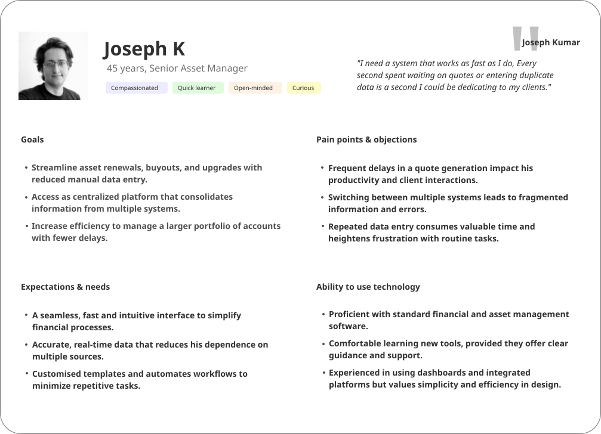
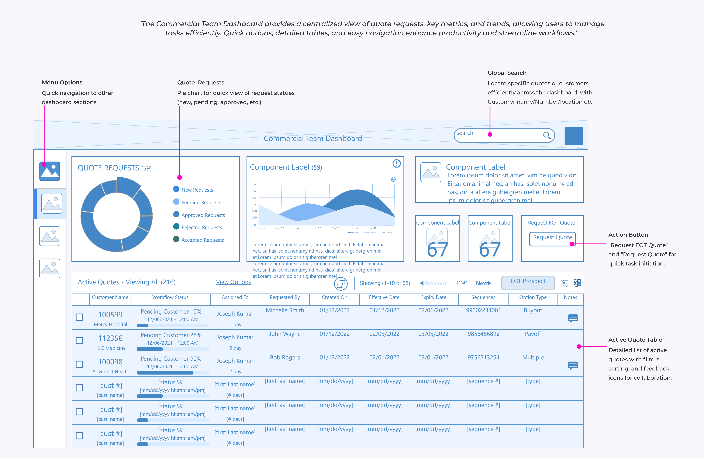
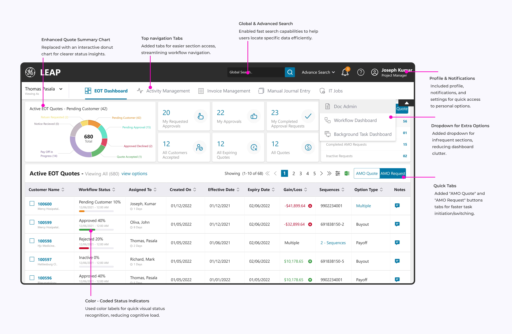
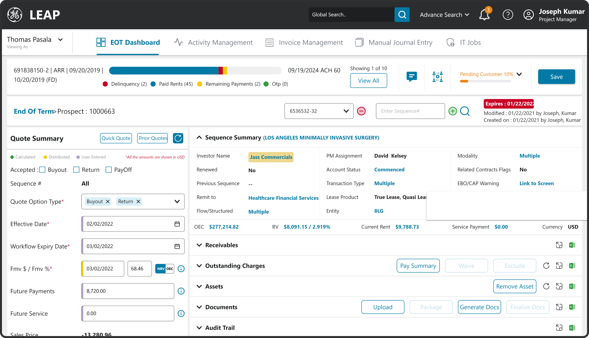

Category
Healthcare & Enterprise Operations
GE Healthcare's financial services workflows required a centralized platform to address the inefficiencies and fragmentation of running quote generation, asset requests, renewals, and upgrades across disconnected tools. Users had voiced frustration with time-consuming, manual work and a lack of integration — the solution needed to improve efficiency, reduce manual process, and elevate customer satisfaction.
This case study covers proprietary enterprise workflows under NDA. Screens shown are sanitized/abstracted, dashboard data is illustrative placeholder content, and figures below are approximate and directional. Exact metrics available under NDA on request.
Healthcare & Enterprise Operations
UX/UI Designer (via Tata Consultancy Services)
October 2022 – Present
Problem statement

Joseph values streamlined processes that reduce redundant tasks, boosting his productivity and allowing more focus on client relationships.
Workflow fragmentation disrupts Joseph's productivity; a unified platform consolidating data eliminates back-and-forth decision-making.
Joseph prioritizes intuitive, reliable tools with minimal learning curve that enhance day-to-day workflow without a steep learning curve.
Fast, real-time data processing is crucial in quote preparation — expectations, filters, and interactions all need to reduce time and effort.
Users like Joseph value processes that reduce manual tasks and streamline workflows, which directly impacts their productivity and satisfaction.
Fragmentation across multiple systems leads to inefficiencies; users perform noticeably better with minimal, well-organized navigation.
Users seek easy, no-nonsense systems that require minimal training and support their existing mental model of the workflow.
Real-time data processing, especially in quote preparation, is essential — it lets users reduce dead time and errors caused by manual re-entry.
To solve these issues, I designed a centralized, mission-ready platform by automating repetitive tasks and consolidating data into a user-friendly interface. With role-based access, I allowed users to independently manage requests for quote generation without waiting on other teams, enhancing accessibility and autonomy while improving overall efficiency and user satisfaction.

We ran usability sessions on the initial wireframes to gather insight into user interactions, identify pain points, and collect feedback on usability. Based on that feedback, we implemented key changes: streamlined navigation, color-coded status indicators, enhanced search capabilities, and quick action buttons — updates designed to improve accessibility, reduce task-completion time, and create a more intuitive, efficient experience across the final dashboard.


Dashboard data above is illustrative placeholder content, consistent with the NDA note at the top of this page.
The app enhancements drove notable gains in user satisfaction, efficiency, and productivity. By simplifying financial processes and enabling faster data retrieval, the platform saw adoption scale across several teams with improved collaboration. Performance upgrades cut quote preparation time substantially and boosted stated satisfaction. User-centered features increased processed quotes and reduced manual work, giving users greater autonomy, accessibility, and a seamless experience across devices.
"This has completely streamlined my daily tasks. What used to take hours now only takes a few minutes, letting me focus more on client management."
Senior Asset Manager Financial Services team"I now have full autonomy to raise and track quote requests without relying on others. It's a real change for efficiency and team productivity."
Asset Manager, Team Lead Financial Services team"The platform's responsiveness on mobile means I can manage tasks anytime, anywhere. It's boosted my productivity and cut delays in our workflow."
Field Operations Manager Financial Services teamQuoted with role-based attribution rather than full names, since I don't have explicit confirmation these reviewers consented to being publicly named.
The biggest learning from this project was designing for systems, not just screens. It sharpened my ability to structure workflows, work across cross-functional teams, and turn operational complexity into clearer digital experiences.
This case study covers proprietary enterprise workflows under NDA with GE Healthcare. The scope, role, and design approach above are shareable — detailed screens, internal tooling, and exact outcome metrics are available on request for recruiters and hiring managers.